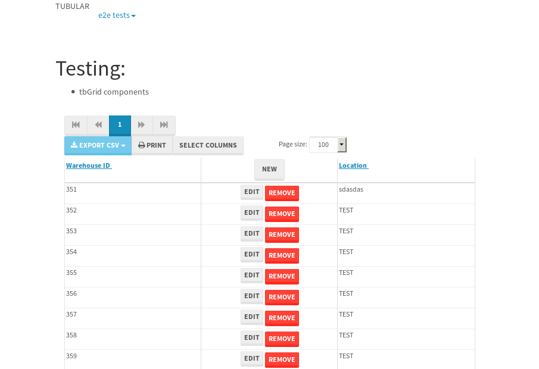
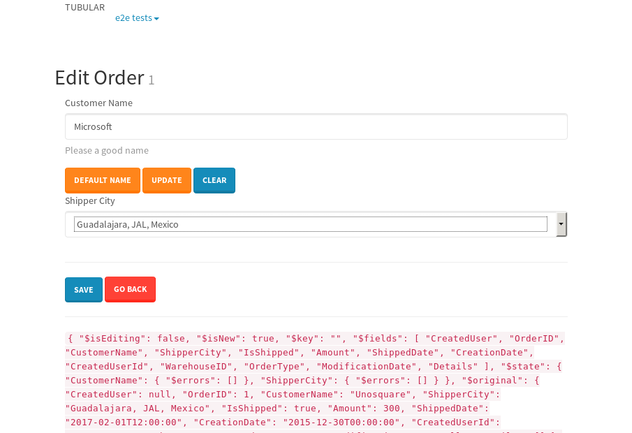

tbColumn.Grid Sorting - 186.221sTests: 5Skipped: 0Failures: 3 should sort data in ascending order then on descending order when sorting by Order Id column - 46.056sExpected '1' to be '500'.✗Expected '20' to be '481'.✗Tests passed: 50.00%should order data in ascending order when click-sorting an unsorted text column - 24.992sTests passed: 100.00%should order data in descending order when click-sorting an ascending-sorted text column - 44.844sExpected 'Advanced Technology Systems' to be 'Vesta'.✗Tests passed: 0.00%should order data in ascending order when click-sorting an unsorted date column - 25.213sTests passed: 100.00%should order data in descending order when click-sorting twice an unsorted date column - 45.106sExpected '12/30/2015' to match /1\/01\/2016/.✗Tests passed: 0.00%
tbEmptyForm - 4.203sTests: 3Skipped: 0Failures: 0 should have an empty required field - 0.393sTests passed: 100.00%should not be able to click on save - 0.024sTests passed: 100.00%should load default value for numeric field - 0.029sTests passed: 100.00%
Tubular Filters.tbColumnFilter - 97.523sTests: 12Skipped: 0Failures: 0 should cancel filtering when clicking outside filter-popover - 7.797sTests passed: 100.00%should disable Value text-input for "None" filter - 5.727sTests passed: 100.00%should disable apply button for "None" filter - 5.9sTests passed: 100.00%should decorate popover button when showing data is being filtered for its column - 11.298sTests passed: 100.00%should correctly filter data for the "Equals" filtering option - 6.953sTests passed: 100.00%should correctly filter data for the "Not Equals" filtering option - 7.178sTests passed: 100.00%should correctly filter data for the "Contains" filtering option - 7.724sTests passed: 100.00%should correctly filter data for the "Not Contains" filtering option - 8.11sTests passed: 100.00%should correctly filter data for the "Starts With" filtering option - 6.392sTests passed: 100.00%should correctly filter data for the "Not Starts With" filtering option - 6.372sTests passed: 100.00%should correctly filter data for the "Ends With" filtering option - 6.358sTests passed: 100.00%should correctly filter data for the "Not Ends With" filtering option - 6.318sTests passed: 100.00%
Tubular Filters.tbColumnDateTimeFilter - 124.777sTests: 12Skipped: 0Failures: 0 should cancel filtering when clicking outside filter-popover - 6.295sTests passed: 100.00%should disable Value text-input for "None" filter - 5.754sTests passed: 100.00%should disable apply button for "None" filter - 5.795sTests passed: 100.00%should clear filtering when clicking on Clean button - 16.668sTests passed: 100.00%should decorate popover button when showing data is being filtered for its column - 10.981sTests passed: 100.00%should correctly filter data for the "Equals" filtering option - 6.078sTests passed: 100.00%should correctly filter data for the "Not Equals" filtering option - 6.429sTests passed: 100.00%should correctly filter data for the "Between" filtering option - 11.199sTests passed: 100.00%should correctly filter data for the "Greater-or-equal" filtering option - 11.107sTests passed: 100.00%should correctly filter data for the "Greater" filtering option - 11.049sTests passed: 100.00%should correctly filter data for the "Less-or-equal" filtering option - 11.13sTests passed: 100.00%should correctly filter data for the "Less" filtering option - 11.122sTests passed: 100.00%
Tubular Filters.tbColumnOptionsFilter - 78.755sTests: 3Skipped: 0Failures: 0 should cancel filtering when clicking outside filter-popover - 7.812sTests passed: 100.00%should decorate popover button when showing data is being filtered for its column - 10.945sTests passed: 100.00%should filter column-elements in accordance to the selected filter when selecting a single option - 48.562sTests passed: 100.00%
Tubular Filters.tbTextSearch - 44.151sTests: 5Skipped: 0Failures: 0 min-chars is not set - 0.07sTests passed: 100.00%should filter data in searchable-column customer name to matching inputted text, starting from 3 characters - 5.917sTests passed: 100.00%should filter data in searchable-column shipper city to matching inputted text, starting from 3 characters - 11.093sTests passed: 100.00%should show clear button when there is inputted text only - 5.69sTests passed: 100.00%should clear filtering when clicking clear button - 15.689sTests passed: 100.00%
tbForm related components.tbCheckboxField - 20.89sTests: 2Skipped: 0Failures: 1 should save changes on "SAVE" - 18.284sExpected 51 to be -1.✗Tests passed: 50.00%should discard changes on "CANCEL" - 0.923sTests passed: 100.00%
tbForm related components.tbDropDownEditor - 22.468sTests: 5Skipped: 0Failures: 0 should set initial input value to the value of "value" attribute when defined - 0.81sTests passed: 100.00%should show the component name value in a label field when "showLabel" attribute is true - 0.803sTests passed: 100.00%should show a help field equal to this attribute, is present - 0.847sTests passed: 100.00%should submit modifications to item/server when clicking form "Save" - 18.165sTests passed: 100.00%should NOT submit modifications to item/server when clicking form "Cancel" - 1.257sTests passed: 100.00%
tbForm related components.tbTextArea - 24.693sTests: 7Skipped: 0Failures: 0 should set initial input value to the value of "value" attribute when defined - 0.848sTests passed: 100.00%should be invalidated when the number of chars is not in the range of "min" and "max" attributes - 1.362sTests passed: 100.00%should show the component name value in a label field when "showLabel" attribute is true - 0.805sTests passed: 100.00%should show a help field equal to this attribute, is present - 0.858sTests passed: 100.00%should require the field when the attribute "required" is true - 0.97sTests passed: 100.00%should submit modifications to item/server when clicking form "Save" - 17.999sTests passed: 100.00%should NOT submit modifications to item/server when clicking form "Cancel" - 1.027sTests passed: 100.00%
tbForm related components.tbDateEditor - 23.207sTests: 6Skipped: 0Failures: 0 should set initial date value to the value of "value" attribute when defined - 0.757sTests passed: 100.00%should be invalidated when the date is not in the range of "min" and "max" attributes - 1.243sTests passed: 100.00%should show the component name value in a label field when "showLabel" attribute is true - 0.762sTests passed: 100.00%should show a help field equal to this attribute, is present - 0.606sTests passed: 100.00%should submit modifications to item/server when clicking form "Save" - 17.88sTests passed: 100.00%should NOT submit modifications to item/server when clicking form "Cancel" - 1.258sTests passed: 100.00%
tbForm related components.tbTypeaheadEditor - 147.256sTests: 7Skipped: 0Failures: 2 should show an options list when there is an API-info/component entered-data - 18.428sTests passed: 100.00%should select the option clicked - 18.701sTests passed: 100.00%should show a "delete" button when an option/match is selected, and delete the option if button is clicked - 19.297sTests passed: 100.00%should show a label value equal to the component name when "showLabel" attribute is true - 18.071sTests passed: 100.00%should require a value when "require" attribute is true - 18.171sFailed: tbTypeaheadEditor.$(...).click.then is not a function✗Tests passed: 0.00%should submit modifications to item/server when clicking form "Save" - 18.084sFailed: tbTypeaheadEditor.$(...).click.then is not a function✗Tests passed: 0.00%should NOT submit modifications to item/server when clicking form "Cancel" - 18.584sTests passed: 100.00%
tbForm related components.tbSimpleEditor - 24.914sTests: 9Skipped: 0Failures: 0 should set initial input value to the value of "value" attribute when defined - 0.579sTests passed: 100.00%should be invalidated when the number of chars is not in the range of "min" and "max" attributes - 0.991sTests passed: 100.00%should show the component name value in a label field when "showLabel" attribute is true - 0.556sTests passed: 100.00%should set input placeholder to the value of "placeholder" attribute - 0.866sTests passed: 100.00%should validate the control using the "regex" attribute, if present - 0.761sTests passed: 100.00%should show a help field equal to this attribute, is present - 0.741sTests passed: 100.00%should require the field when the attribute "required" is true - 0.82sTests passed: 100.00%should submit modifications to item/server when clicking form "Save" - 17.939sTests passed: 100.00%should NOT submit modifications to item/server when clicking form "Cancel" - 1.11sTests passed: 100.00%
tbForm related components.tbNumericEditor - 23.986sTests: 7Skipped: 0Failures: 0 should set initial component value to the value of "value" attribute when defined - 0.67sTests passed: 100.00%should be invalidated when the entered number is not in the range of "min" and "max" attributes - 1.01sTests passed: 100.00%should show the component name value in a label field when "showLabel" attribute is true - 0.733sTests passed: 100.00%should show a help field equal to this attribute, is present - 0.654sTests passed: 100.00%should require the field when the attribute "required" is true - 0.811sTests passed: 100.00%should submit modifications to item/server when clicking form "Save" - 18.225sTests passed: 100.00%should NOT submit modifications to item/server when clicking form "Cancel" - 1.239sTests passed: 100.00%
tbForm Connection Error NoModelKey - 3.868sTests: 1Skipped: 0Failures: 0 tbForm connection error functionality - 0.003sTests passed: 100.00%
tbForm Connection Error NoServerUrl - 4.936sTests: 1Skipped: 0Failures: 0 tbForm connection error functionality - 0.003sTests passed: 100.00%
tbGridComponents - 30.784sTests: 6Skipped: 0Failures: 1 should add item with newRow method - 3.739sExpected '402 EDIT REMOVE Mon May 08 2017 14:55:03 GMT+0000 (UTC)' not to be '402 EDIT REMOVE Mon May 08 2017 14:55:03 GMT+0000 (UTC)'.✗Tests passed: 50.00%should add item with newRow method and cancel action - 0.714sTests passed: 100.00%should update item with tbSaveButton - 1.055sTests passed: 100.00%should NOT update item on cancel Update action - 0.77sTests passed: 100.00%should remove item with tbRemoveButton - 20.566sTests passed: 100.00%should NOT remove item on cancel Remove action - 0.798sTests passed: 100.00%
tbGridPager.navigation buttons - 2.77sTests: 1Skipped: 0Failures: 0 should perform no action when clicking on the numbered navigation button corresponding to the current-showing results page - 0.697sTests passed: 100.00%
tbGridPager.navigation buttons.first/non-last results page related functionality - 0.756sTests: 2Skipped: 0Failures: 0 should disable "first" and "previous" navigation buttons when in first results page - 0.1sTests passed: 100.00%should enable "last" and "next" navigation buttons when in a results page other than last - 0.655sTests passed: 100.00%
tbGridPager.navigation buttons.last/non-first results page related functionality - 1.317sTests: 2Skipped: 0Failures: 0 should disable "last" and "next" navigation buttons when in last results page - 0.642sTests passed: 100.00%should enable "first" and "previous" navigation buttons when in a results page other than first - 0.674sTests passed: 100.00%
tbGridPager.page navigation - 4.648sTests: 5Skipped: 0Failures: 0 should go to next results page when clicking on next navigation button - 1.324sTests passed: 100.00%should go to previous results page when clicking on previous navigation button - 1.203sTests passed: 100.00%should go to last results page when clicking on last navigation button - 0.74sTests passed: 100.00%should go to first results page when clicking on first navigation button - 0.755sTests passed: 100.00%should go to corresponding results page when clicking on a numbered navigation button - 0.624sTests passed: 100.00%
tbGridPagerInfo - 6.39sTests: 2Skipped: 0Failures: 0 should show text in accordance to numbered of filter rows and current results-page - 2.15sTests passed: 100.00%should show count in footer - 0.029sTests passed: 100.00%
tbPageSizeSelctor - 15.064sTests: 4Skipped: 0Failures: 0 should filter up to 10 data rows per page when selecting a page size of "10" - 3.192sTests passed: 100.00%should filter up to 20 data rows per page when selecting a page size of "20" - 2.672sTests passed: 100.00%should filter up to 50 data rows per page when selecting a page size of "50" - 3.069sTests passed: 100.00%should filter up to 100 data rows per page when selecting a page size of "100" - 2.806sTests passed: 100.00%
tbSingleForm - 27.026sTests: 8Skipped: 1Failures: 1 should load correct info - 0s***Skipped***Tests passed: 0%should change customer name - 3.521sTests passed: 100.00%should save it - 3.95sExpected '' to be 'Saved'.✗Expected '' to be 'Saved'.✗Tests passed: 0.00%should clear the inputs - 3.926sTests passed: 100.00%should update - 3.874sTests passed: 100.00%should reset editor - 4.582sTests passed: 100.00%should not save if not Changes - 3.502sTests passed: 100.00%should not be able to click on save - 3.669sTests passed: 100.00%


{kind=link}
{kind=link}